9 VARモデル
9.1 VARモデル
- 以下では, MTSパッケージ, varsパッケージを利用
9.1.1 VAR(\(p\))モデルのシミュレーション
MTS::VARMAsim()関数 (VARMA(\(p,q\))モデルのパス生成)
VAR(2)モデル例: \[Y_{1,t}=0.3 + 0.2 Y_{1,t-1} + 0.3 Y_{2,t-1} - 0.5 Y_{1,t-2} (+0 \cdot Y_{2,t-2}) + \epsilon_{1,t}\] \[Y_{2,t}=-0.3 -0.6 Y_{1,t-1} + 1.1 Y_{2,t-1} (+0 \cdot Y_{1,t-2}) - 0.6 Y_{2,t-2} + \epsilon_{2,t}\] \[ \left[ \begin{array}{r} \epsilon_{1,t} \\ \epsilon_{2,t} \end{array} \right] \sim_{\it i.i.d.} N \Big(\left[ \begin{array}{r} 0 \\ 0 \end{array} \right], \left[ \begin{array}{rr} 4 & 0.8 \\ 0.8 & 1 \end{array} \right]\Big) \]
上記VAR(2)モデルのサンプルパスの生成
library(MTS)
Nlen <- 300
Seedv <- 1
set.seed(Seedv)
p0 <- c(0.3, -0.3) # Phi0 (定数項)
p1 <- matrix(c(0.2, -0.6, 0.3, 1.1), 2, 2) # Phi1 (ラグ1のVAR係数行列)
p2 <- matrix(c(-0.5, 0, 0, -0.6), 2, 2) # Phi2 (ラグ2のVAR係数行列)
Pmat <- cbind(p1, p2) # VAR係数行列を重ねた行列
Sig <- matrix(c(4, 0.8, 0.8, 1), 2, 2) # イノベーションの分散共分散行列 (正値定符号)
Pmat; Sig
## [,1] [,2] [,3] [,4]
## [1,] 0.2 0.3 -0.5 0.0
## [2,] -0.6 1.1 0.0 -0.6
## [,1] [,2]
## [1,] 4.0 0.8
## [2,] 0.8 1.0
ysim <- VARMAsim(Nlen, arlags = 2, cnst = p0, phi = Pmat, sigma = Sig)
Yt <- ysim$series
MTSplot(Yt) # 時系列プロット
- 生成パス\(y_t\)の標本自己共分散行列
- 対角成分: 各成分の自己相関 \(\hat{\rho}_1(h), \hat{\rho}_2(h)\)
- 非対角成分: \(y^1_t,y^2_t\)間のクロス相関
- 行列の(1,2)成分: \(\hat{\rho}_{1,2}(h),\,h\ge0\)
- 行列の(2,1)成分: \(\hat{\rho}_{1,2}(h)\equiv\hat{\rho}_{2,1}(-h), \,h\le0\)
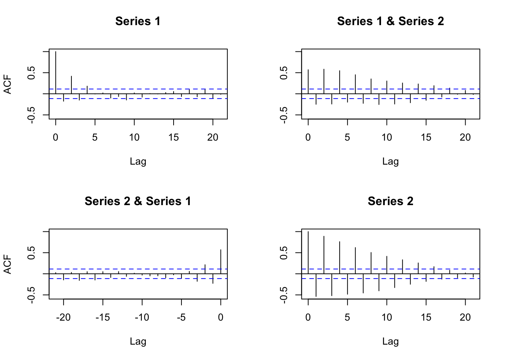
# acf()の出力結果の非対角成分の確認
# cor(Y1(t+h), Y2(t))
# h>0
cor(Yt[2:Nlen, 1], Yt[1:(Nlen-1), 2]) # Y1(t+1) vs Y2(t)
## [1] -0.2491788
cor(Yt[3:Nlen, 1], Yt[1:(Nlen-2), 2]) # Y1(t+2) vs Y2(t)
## [1] 0.5855889
# h<0
cor(Yt[1:(Nlen-1), 1], Yt[2:Nlen, 2]) # Y1(t) vs Y2(t+1)
## [1] -0.2269957
cor(Yt[1:(Nlen-2), 1], Yt[3:Nlen, 2]) # y1(t) vs Y2(t+2)
## [1] 0.21569029.1.2 VAR(\(p\))モデルの次数同定
- 分析者による最適なラグ次数の選択を支援
- MTS::VARorder()関数
- maxp: ラグ次数の最大値 (デフォルト=13)
- 出力: BIC, HQ (Hannan and Quinn情報量規準), M(p), p-value (カイ二乗検定統計量 & p値)VARorder(Yt, maxp = 10, output = T)
## selected order: aic = 2
## selected order: bic = 2
## selected order: hq = 2
## Summary table:
## p AIC BIC HQ M(p) p-value
## [1,] 0 4.2159 4.2159 4.2159 0.0000 0.0000
## [2,] 1 3.8924 3.9418 3.9122 100.3170 0.0000
## [3,] 2 1.5169 1.6157 1.5564 683.4158 0.0000
## [4,] 3 1.5299 1.6781 1.5892 3.8619 0.4250
## [5,] 4 1.5434 1.7409 1.6224 3.6978 0.4484
## [6,] 5 1.5325 1.7794 1.6313 10.4626 0.0333
## [7,] 6 1.5548 1.8511 1.6734 1.2025 0.8777
## [8,] 7 1.5575 1.9032 1.6958 6.5850 0.1595
## [9,] 8 1.5799 1.9750 1.7381 1.1470 0.8867
## [10,] 9 1.5896 2.0340 1.7674 4.6092 0.3298
## [11,] 10 1.6099 2.1037 1.8075 1.7109 0.7887- vars::VARselect()関数
- lag.max: ラグ次数の最大値 (デフォルト=10)
- type: 確定的な(定数・トレンド)項の種類
"const"(定数項有), "trend"(トレンド有), "both"(定数項・トレンド共有), "none"(両方無)
- 出力: AIC, HQ, SC (Schwarz情報量規準), FPE (forecast prediction error)library(vars)
vars::VARselect(Yt, lag.max = 10, type = "const")
## $selection
## AIC(n) HQ(n) SC(n) FPE(n)
## 2 2 2 2
##
## $criteria
## 1 2 3 4 5 6 7 8
## AIC(n) 3.907125 1.532547 1.546463 1.560866 1.550885 1.574122 1.577719 1.601096
## HQ(n) 3.937546 1.583248 1.617444 1.652128 1.662427 1.705945 1.729823 1.773480
## SC(n) 3.983054 1.659094 1.723629 1.788652 1.829289 1.903146 1.957362 2.031358
## FPE(n) 49.755778 4.629985 4.694921 4.763133 4.715983 4.827081 4.844789 4.959798
## 9 10
## AIC(n) 1.611643 1.632857
## HQ(n) 1.804307 1.845802
## SC(n) 2.092524 2.164357
## FPE(n) 5.012920 5.1210769.1.3 VAR(\(p\))モデルの推定
- 最小2乗法によるパラメータ推定
- MTS::VAR()関数
- p: ラグ次数
- include.mean: 平均ベクトルを加える(推定する)か (デフォルト=T)
- fixed: パラメータに制約を付与する論理値行列. 制約付推定 (主に有意でない推定値の除去) に使用est.VAR1 <- MTS::VAR(Yt, p = 2, output = T, include.mean = T, fixed = NULL)
## Constant term:
## Estimates: 0.7010694 -0.4390955
## Std.Error: 0.2935926 0.1458662
## AR coefficient matrix
## AR( 1 )-matrix
## [,1] [,2]
## [1,] -0.0928 0.0954
## [2,] -0.0197 -0.0286
## standard error
## [,1] [,2]
## [1,] 0.0575 0.0462
## [2,] 0.0286 0.0230
## AR( 2 )-matrix
## [,1] [,2]
## [1,] 0.105 0.402
## [2,] -0.616 1.117
## standard error
## [,1] [,2]
## [1,] 0.0575 0.0465
## [2,] 0.0285 0.0231
##
## Residuals cov-mtx:
## [,1] [,2]
## [1,] 4.4990390 0.8786783
## [2,] 0.8786783 1.1105526
##
## det(SSE) = 4.224344
## AIC = 1.494197
## BIC = 1.592965
## HQ = 1.533724- vars::VAR()関数
- p: ラグ次数
- type: 確定的な(定数・トレンド)項の種類
"const"(定数項有), "trend"(トレンド有), "both"(定数項・トレンド共有), "none"(両方無)
- season: 中心化済の季節性ダミー変数の追加 (frequencyを表す整数を指定)
- exogen: 外生変数の追加
- lag.max: ラグ次数の最大値 (ラグ次数選択において)
- in: 情報量規準 (lag.maxを指定している場合)est.VAR2 <- vars::VAR(Yt, p = 2, type = "const")
# 最小2乗法によるパラメータ推定
# type: "const"(定数項有), trend:("トレンド有"), "both", "none"
summary(est.VAR2)
##
## VAR Estimation Results:
## =========================
## Endogenous variables: y1, y2
## Deterministic variables: const
## Sample size: 298
## Log Likelihood: -1060.376
## Roots of the characteristic polynomial:
## 0.9308 0.7541 0.7541 0.6891
## Call:
## vars::VAR(y = Yt, p = 2, type = "const")
##
##
## Estimation results for equation y1:
## ===================================
## y1 = y1.l1 + y2.l1 + y1.l2 + y2.l2 + const
##
## Estimate Std. Error t value Pr(>|t|)
## y1.l1 -0.09285 0.05751 -1.614 0.1075
## y2.l1 0.09536 0.04624 2.062 0.0401 *
## y1.l2 0.10498 0.05745 1.827 0.0687 .
## y2.l2 0.40175 0.04645 8.648 3.49e-16 ***
## const 0.70107 0.29359 2.388 0.0176 *
## ---
## Signif. codes: 0 '***' 0.001 '**' 0.01 '*' 0.05 '.' 0.1 ' ' 1
##
##
## Residual standard error: 2.139 on 293 degrees of freedom
## Multiple R-Squared: 0.3636, Adjusted R-squared: 0.3549
## F-statistic: 41.86 on 4 and 293 DF, p-value: < 2.2e-16
##
##
## Estimation results for equation y2:
## ===================================
## y2 = y1.l1 + y2.l1 + y1.l2 + y2.l2 + const
##
## Estimate Std. Error t value Pr(>|t|)
## y1.l1 -0.01967 0.02857 -0.688 0.49185
## y2.l1 -0.02859 0.02297 -1.244 0.21435
## y1.l2 -0.61604 0.02854 -21.583 < 2e-16 ***
## y2.l2 1.11695 0.02308 48.395 < 2e-16 ***
## const -0.43910 0.14587 -3.010 0.00284 **
## ---
## Signif. codes: 0 '***' 0.001 '**' 0.01 '*' 0.05 '.' 0.1 ' ' 1
##
##
## Residual standard error: 1.063 on 293 degrees of freedom
## Multiple R-Squared: 0.9232, Adjusted R-squared: 0.9222
## F-statistic: 880.9 on 4 and 293 DF, p-value: < 2.2e-16
##
##
##
## Covariance matrix of residuals:
## y1 y2
## y1 4.5758 0.8937
## y2 0.8937 1.1295
##
## Correlation matrix of residuals:
## y1 y2
## y1 1.0000 0.3931
## y2 0.3931 1.00009.1.4 VAR(\(p\))モデル予測
- MTS::VARpred()関数
- h: 予測期間の長さ
- orig: 予測の起点 (デフォルト=0, 最終のデータ点)
- Out.level: 出力の詳細のコントロール (T/F)pred.VAR1 = VARpred(est.VAR1, h = 20, orig = 0, Out.level = F, output = T)
## orig 300
## Forecasts at origin: 300
## [,1] [,2]
## [1,] -1.6935 -4.659
## [2,] -1.5588 -2.224
## [3,] -1.4159 -4.506
## [4,] -0.6541 -1.806
## [5,] -1.3692 -4.535
## [6,] -0.3984 -1.896
## [7,] -1.4084 -4.599
## [8,] -0.4105 -2.153
## [9,] -1.4616 -4.638
## [10,] -0.5135 -2.429
## [11,] -1.4999 -4.640
## [12,] -0.6321 -2.674
## [13,] -1.5169 -4.609
## [14,] -0.7383 -2.875
## [15,] -1.5155 -4.556
## [16,] -0.8252 -3.035
## [17,] -1.5012 -4.491
## [18,] -0.8939 -3.163
## [19,] -1.4795 -4.423
## [20,] -0.9480 -3.266
## Standard Errors of predictions:
## [,1] [,2]
## [1,] 2.121 1.054
## [2,] 2.129 1.056
## [3,] 2.199 1.729
## [4,] 2.205 1.734
## [5,] 2.269 2.315
## [6,] 2.270 2.333
## [7,] 2.357 2.728
## [8,] 2.358 2.760
## [9,] 2.432 3.010
## [10,] 2.435 3.050
## [11,] 2.488 3.207
## [12,] 2.493 3.249
## [13,] 2.528 3.349
## [14,] 2.535 3.388
## [15,] 2.557 3.453
## [16,] 2.564 3.486
## [17,] 2.579 3.530
## [18,] 2.586 3.557
## [19,] 2.596 3.588
## [20,] 2.602 3.609
## Root mean square errors of predictions:
## [,1] [,2]
## [1,] 2.139 1.063
## [2,] 2.154 1.061
## [3,] 2.408 2.994
## [4,] 2.226 1.751
## [5,] 2.460 3.586
## [6,] 2.275 2.391
## [7,] 2.616 3.717
## [8,] 2.359 2.859
## [9,] 2.656 3.698
## [10,] 2.444 3.174
## [11,] 2.649 3.664
## [12,] 2.510 3.378
## [13,] 2.636 3.650
## [14,] 2.557 3.508
## [15,] 2.628 3.653
## [16,] 2.587 3.591
## [17,] 2.626 3.667
## [18,] 2.607 3.643
## [19,] 2.627 3.683
## [20,] 2.620 3.678- predict()関数 (vars::VARの出力に対して適用)
- n.ahead: 予測期間の長さ
- ci: 予測信頼区間
pred.VAR2$fcst
## $y1
## fcst lower upper CI
## [1,] -1.6935489 -5.886138 2.499040 4.192589
## [2,] -1.5588289 -5.766916 2.649258 4.208087
## [3,] -1.4158594 -5.761805 2.930087 4.345946
## [4,] -0.6541053 -5.012838 3.704628 4.358733
## [5,] -1.3691744 -5.853357 3.115008 4.484182
## [6,] -0.3983955 -4.885523 4.088732 4.487127
## [7,] -1.4084408 -6.067917 3.251035 4.659476
## [8,] -0.4104564 -5.070912 4.250000 4.660456
## [9,] -1.4615648 -6.269351 3.346221 4.807786
## [10,] -0.5135316 -5.326625 4.299561 4.813093
##
## $y2
## fcst lower upper CI
## [1,] -4.659151 -6.742164 -2.57613758 2.083013
## [2,] -2.223532 -4.309952 -0.13711248 2.086420
## [3,] -4.505606 -7.922276 -1.08893531 3.416670
## [4,] -1.805711 -5.233098 1.62167648 3.427387
## [5,] -4.534908 -9.110020 0.04020335 4.575112
## [6,] -1.896451 -6.507997 2.71509585 4.611547
## [7,] -4.598833 -9.990735 0.79306982 5.391903
## [8,] -2.152730 -7.607556 3.30209602 5.454826
## [9,] -4.638479 -10.588832 1.31187382 5.950353
## [10,] -2.429372 -8.458542 3.59979824 6.029170- MTSパッケージは, 外生変数有りのVARXモデル, VMAモデル, さらには, 一般のVARMAモデルに対しても, 次数同定, モデル推定, 予測のための関数を用意.
9.2 VAR解析
VARモデルによる変数間の動学的関係性の分析
- 以下, MTSパッケージ, varsパッケージを利用
9.2.1 VAR(\(p\))モデルの推定(復習)
- 以下では, シミュレーションデータを使用
- MTSパッケージのVARsim関数でパスを生成
- varパッケージのVARselect,VAR関数を使って, 次数同定およびモデル推定
\[Y_{1,t}=1.0 + 0.6 Y_{1,t-1} + 0.1 Y_{2,t-1} + \epsilon_{1,t}\] \[Y_{2,t}=-1.0 +0.5 Y_{1,t-1} + 0.7 Y_{2,t-1} + \epsilon_{2,t}\] \[ \left[ \begin{array}{r} \epsilon_{1,t} \\ \epsilon_{2,t} \end{array} \right] \sim_{\it i.i.d.} N \Big(\left[ \begin{array}{r} 0 \\ 0 \end{array} \right], \left[ \begin{array}{rr} 4 & 1 \\ 1 & 1 \end{array} \right]\Big) \]
library(MTS)
Nlen <- 300
Seedv <- 1
set.seed(Seedv)
p0 <- c(1, -1) # Phi0 (定数項)
Pmat <- matrix(c(0.6, 0.5, 0.1, 0.7), 2, 2) # Phi1 (ラグ1のVAR係数行列)
Sig <- matrix(c(4, 1, 1, 1), 2, 2) # イノベーションの分散共分散行列 (正値定符号)
Pmat; Sig## [,1] [,2]
## [1,] 0.6 0.1
## [2,] 0.5 0.7## [,1] [,2]
## [1,] 4 1
## [2,] 1 1ysim <- VARMAsim(Nlen, arlags = 1, cnst = p0, phi = Pmat, sigma = Sig)
Yt <- ysim$series
acf(Yt) # クロス相関
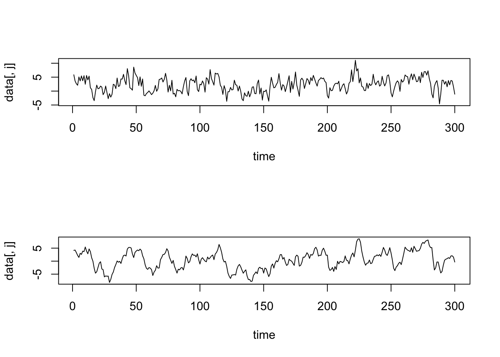
VAR(\(p\))モデルの次数同定
- vars::VARselect()関数
## Loading required package: MASS## Loading required package: strucchange## Loading required package: zoo##
## Attaching package: 'zoo'## The following objects are masked from 'package:base':
##
## as.Date, as.Date.numeric## Loading required package: sandwich## Loading required package: urca## Loading required package: lmtest##
## Attaching package: 'vars'## The following object is masked from 'package:MTS':
##
## VAR## $selection
## AIC(n) HQ(n) SC(n) FPE(n)
## 1 1 1 1
##
## $criteria
## 1 2 3 4 5
## AIC(n) 1.417189 1.432965 1.454790 1.471126 1.460469
## HQ(n) 1.447216 1.483011 1.524855 1.561208 1.570570
## SC(n) 1.492178 1.557947 1.629765 1.696094 1.735430
## FPE(n) 4.125512 4.191134 4.283662 4.354299 4.308277VAR(\(p\))モデルの推定
- vars::VAR()関数
##
## VAR Estimation Results:
## =========================
## Endogenous variables: Y1, Y2
## Deterministic variables: const
## Sample size: 299
## Log Likelihood: -1051.693
## Roots of the characteristic polynomial:
## 0.8123 0.3886
## Call:
## vars::VAR(y = Yt, p = 1, type = "const")
##
##
## Estimation results for equation Y1:
## ===================================
## Y1 = Y1.l1 + Y2.l1 + const
##
## Estimate Std. Error t value Pr(>|t|)
## Y1.l1 0.50728 0.06004 8.449 1.35e-15 ***
## Y2.l1 0.07759 0.04514 1.719 0.0866 .
## const 1.08864 0.17861 6.095 3.40e-09 ***
## ---
## Signif. codes: 0 '***' 0.001 '**' 0.01 '*' 0.05 '.' 0.1 ' ' 1
##
##
## Residual standard error: 2.133 on 296 degrees of freedom
## Multiple R-Squared: 0.3322, Adjusted R-squared: 0.3277
## F-statistic: 73.64 on 2 and 296 DF, p-value: < 2.2e-16
##
##
## Estimation results for equation Y2:
## ===================================
## Y2 = Y1.l1 + Y2.l1 + const
##
## Estimate Std. Error t value Pr(>|t|)
## Y1.l1 0.46669 0.03001 15.55 <2e-16 ***
## Y2.l1 0.69357 0.02256 30.74 <2e-16 ***
## const -0.97716 0.08928 -10.95 <2e-16 ***
## ---
## Signif. codes: 0 '***' 0.001 '**' 0.01 '*' 0.05 '.' 0.1 ' ' 1
##
##
## Residual standard error: 1.066 on 296 degrees of freedom
## Multiple R-Squared: 0.9054, Adjusted R-squared: 0.9048
## F-statistic: 1417 on 2 and 296 DF, p-value: < 2.2e-16
##
##
##
## Covariance matrix of residuals:
## Y1 Y2
## Y1 4.551 1.096
## Y2 1.096 1.137
##
## Correlation matrix of residuals:
## Y1 Y2
## Y1 1.000 0.482
## Y2 0.482 1.000上で推定されたVAR(1)モデルを使用して, VARモデルによる変数間の動学的関係性の分析を行う.
9.2.2 グレンジャーの因果性検定
- vars::causality()関数
- x: VAR()関数により生成された'varest'クラスのオブジェクト
- cause: cause変数 (デフォルトは入力x$yの第1列の変数)
- vcov.: 推定係数の共分散行列の指定
- boot: 棄却点を計算する際にwildブートストラップを使用するか否か(T/F)
- boot.runs: boot=TRUEの場合のブートストラップの反復数## $Granger
##
## Granger causality H0: Y1 do not Granger-cause Y2
##
## data: VAR object est_VAR1
## F-Test = 241.8, df1 = 1, df2 = 592, p-value < 2.2e-16
##
##
## $Instant
##
## H0: No instantaneous causality between: Y1 and Y2
##
## data: VAR object est_VAR1
## Chi-squared = 56.374, df = 1, p-value = 5.995e-14## $Granger
##
## Granger causality H0: Y2 do not Granger-cause Y1
##
## data: VAR object est_VAR1
## F-Test = 2.9555, df1 = 1, df2 = 592, p-value = 0.08611
##
##
## $Instant
##
## H0: No instantaneous causality between: Y2 and Y1
##
## data: VAR object est_VAR1
## Chi-squared = 56.374, df = 1, p-value = 5.995e-149.2.3 インパルス応答
直交インパルス応答
- vars::irf()関数
- x: VAR()関数により生成された'varest'クラスのオブジェクト等
- impulse: インパルス変数 (デフォルト=全変数)
- response: 応答変数 (デフォルト=全変数)
- n.ahead: 将来区間の長さ
- ortho: 直交インパルス応答か (デフォルト=T)
- cumulative: 累積インパルス応答か (デフォルト=F)
- boot: インパルス応答係数のブートストラップ誤差バンド計算の有無 (T/F)
- ci: bootstrap誤差バンドの信頼区間
- runs: bootstrap回数# vars::irf()関数 (ortho = T (デフォルト))
ip1 <- vars::irf(est_VAR1, impulse = c("Y1"), response = c("Y1", "Y2"),
n.ahead = 5, boot = T)
ip2 <- vars::irf(est_VAR1, impulse = c("Y2"), response = c("Y1", "Y2"),
n.ahead = 5, boot = T)
plot(ip1)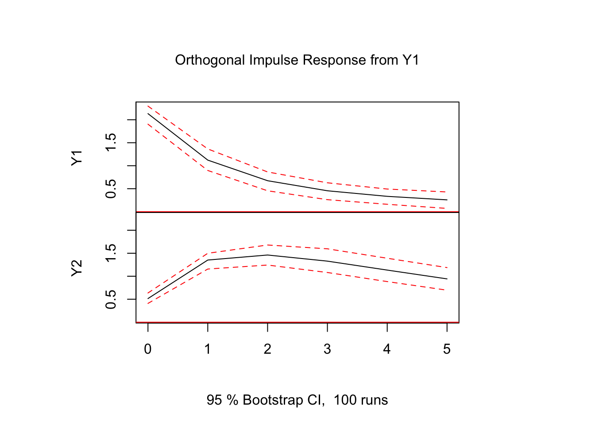
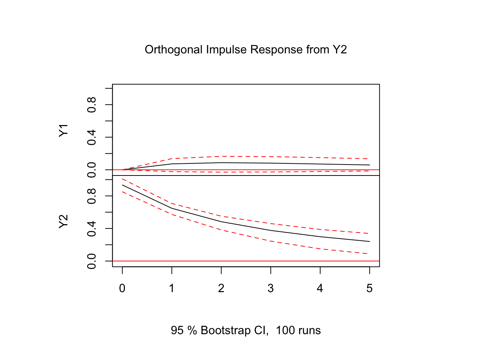
非直交インパルス応答
# vars::irf()関数 (ortho = F)
ip1 <- vars::irf(est_VAR1, impulse = c("Y1"), response = c("Y1", "Y2"),
ortho = F, n.ahead = 5, boot = T)
ip2 <- vars::irf(est_VAR1, impulse = c("Y2"), response = c("Y1", "Y2"),
ortho = F, n.ahead = 5, boot = T)
plot(ip1)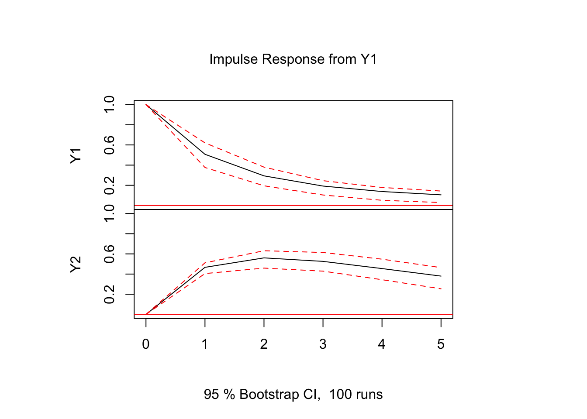
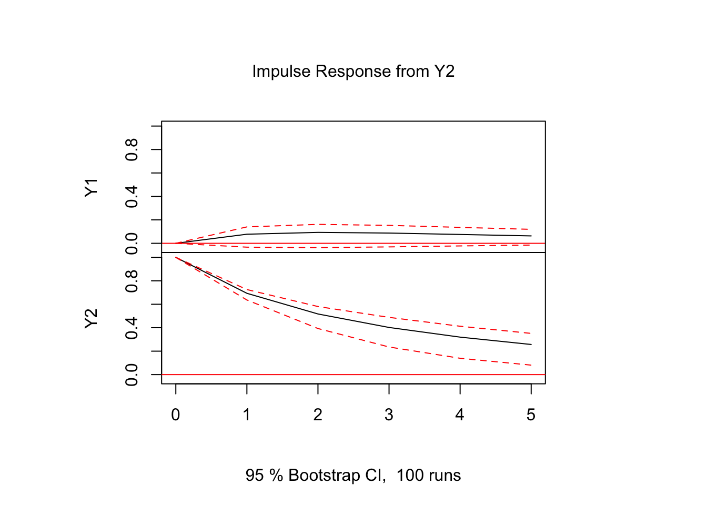
- 累積インパルス応答
ip1_cum <- vars::irf(est_VAR1, impulse = c("Y1"), response = c("Y1","Y2"),
n.ahead = 5, boot = TRUE, cumulative=T)
ip2_cum <- vars::irf(est_VAR1, impulse = c("Y2"), response = c("Y2","Y1"),
n.ahead = 5, boot = TRUE, cumulative=T)
plot(ip1_cum)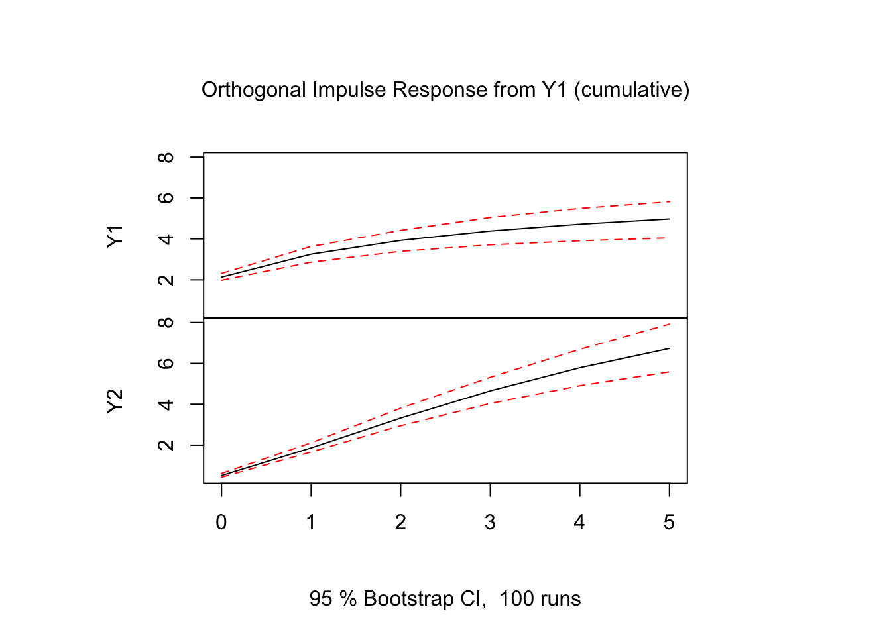
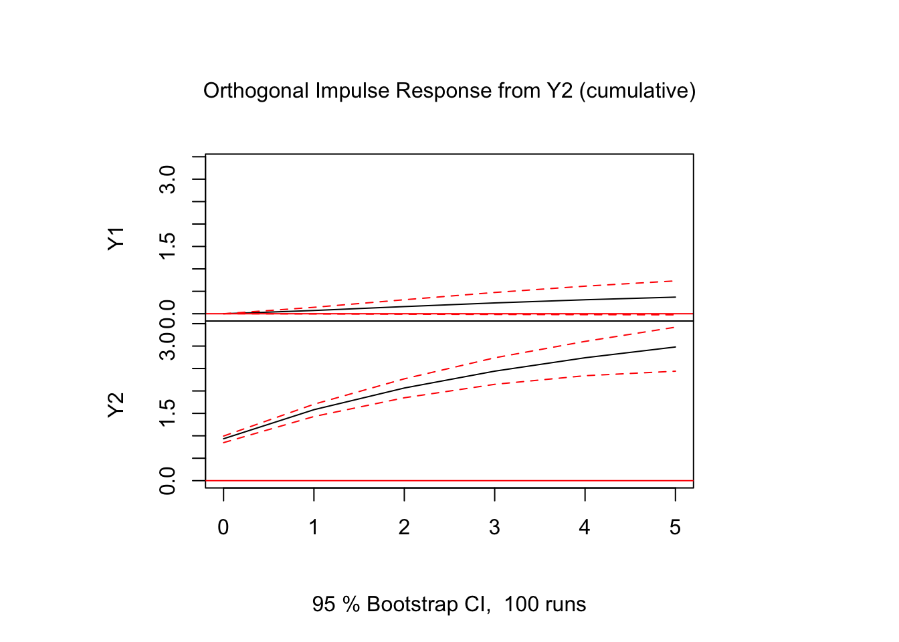
9.3 VAR解析 (データ分析例)
VARモデルによる変数間の動学的関係性の分析
事例1: ソフトバンク(9434) vs ソフトバンクグループ(9984)
- ソフトバンク(9434): 上場日 2018年12月19日
- 親会社ソフトバンクG (9984)
- 保有比率(%): 66.49 (2019.03), 67.13 (2020.03), 40.86 (2021.03), 40.68 (2022.03), 40.47 (2023.03)
- cf. https://www.buffett-code.com/company/9434/mainshareholder
- データをYahoo!ファイナンスより入手
## Loading required package: xts## Loading required package: zoo##
## Attaching package: 'zoo'## The following objects are masked from 'package:base':
##
## as.Date, as.Date.numeric## Loading required package: TTR## Registered S3 method overwritten by 'quantmod':
## method from
## as.zoo.data.frame zoos9984 <- getSymbols('9984.T', from = '2018-12-19', auto.assign = FALSE)
s9434 <- getSymbols('9434.T', from = '2018-12-19', auto.assign = FALSE)
s9984ret <- diff(log(s9984$`9984.T.Adjusted`))[-1]
s9434ret <- diff(log(s9434$`9434.T.Adjusted`))[-1]
sb <- merge.xts(s9984ret, s9434ret, join = "inner")
colnames(sb) <- c("s9984", "s9434")- 各変数の単位根検定
library(fUnitRoots)
#unitrootTest(s9984, type = "c", lags = 1) # type: "nc", "c", "ct"
unitrootTest(s9984ret, type = "c", lags = 1)##
## Title:
## Augmented Dickey-Fuller Test
##
## Test Results:
## PARAMETER:
## Lag Order: 1
## STATISTIC:
## DF: -23.9567
## P VALUE:
## t: < 2.2e-16
## n: 0.004234
##
## Description:
## Thu Jan 18 13:57:59 2024 by user:##
## Title:
## Augmented Dickey-Fuller Test
##
## Test Results:
## PARAMETER:
## Lag Order: 1
## STATISTIC:
## DF: -26.5442
## P VALUE:
## t: < 2.2e-16
## n: 0.00221
##
## Description:
## Thu Jan 18 13:57:59 2024 by user:–> 帰無仮説(\(\phi_1 = 1\))を棄却 (単位根なし)
標本自己共分散行列
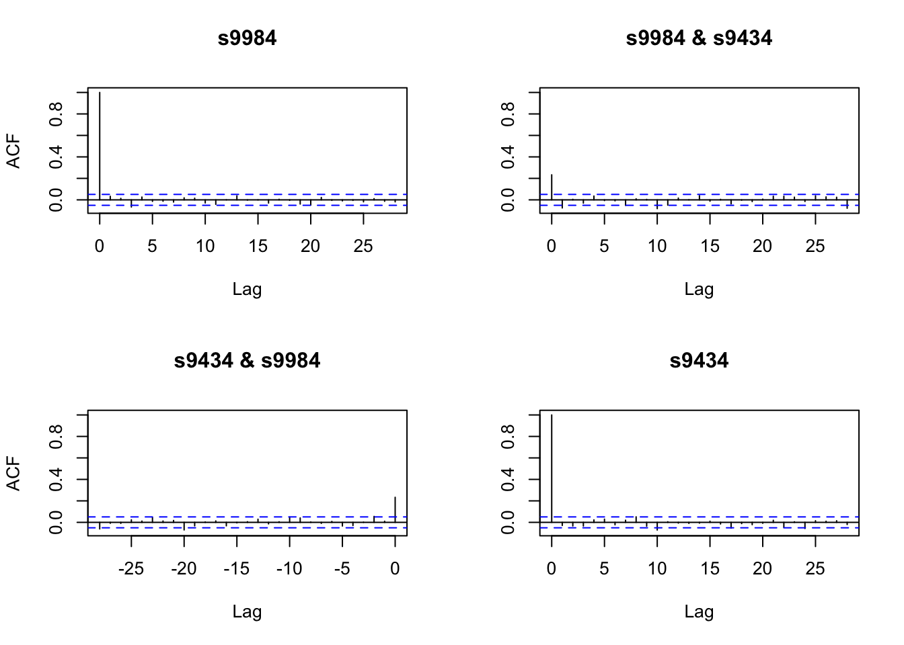
VARモデルの推定
- 以下, パッケージvarsを利用
- VAR(p)モデルの次数の決定
## Loading required package: MASS## Loading required package: strucchange## Loading required package: sandwich## Loading required package: urca##
## Attaching package: 'urca'## The following objects are masked from 'package:fUnitRoots':
##
## punitroot, qunitroot, unitrootTable## Loading required package: lmtest## $selection
## AIC(n) HQ(n) SC(n) FPE(n)
## 3 1 1 3
##
## $criteria
## 1 2 3 4 5
## AIC(n) -1.643819e+01 -1.643944e+01 -1.644231e+01 -1.643832e+01 -1.643348e+01
## HQ(n) -1.642881e+01 -1.642381e+01 -1.642042e+01 -1.641018e+01 -1.639909e+01
## SC(n) -1.641325e+01 -1.639789e+01 -1.638413e+01 -1.636352e+01 -1.634206e+01
## FPE(n) 7.260835e-08 7.251726e-08 7.230939e-08 7.259888e-08 7.295072e-08–> AIC, FPEでは3, HQ, SCでは1が最適
VAR(1)モデルの推定 (OLS推定)
##
## VAR Estimation Results:
## =========================
## Endogenous variables: s9984, s9434
## Deterministic variables: const
## Sample size: 1235
## Log Likelihood: 6641.894
## Roots of the characteristic polynomial:
## 0.05713 0.03535
## Call:
## vars::VAR(y = sb, p = 1, type = "const")
##
##
## Estimation results for equation s9984:
## ======================================
## s9984 = s9984.l1 + s9434.l1 + const
##
## Estimate Std. Error t value Pr(>|t|)
## s9984.l1 0.0442416 0.0288798 1.532 0.125799
## s9434.l1 -0.2625268 0.0776155 -3.382 0.000741 ***
## const 0.0005738 0.0007746 0.741 0.459016
## ---
## Signif. codes: 0 '***' 0.001 '**' 0.01 '*' 0.05 '.' 0.1 ' ' 1
##
##
## Residual standard error: 0.02718 on 1232 degrees of freedom
## Multiple R-Squared: 0.009821, Adjusted R-squared: 0.008214
## F-statistic: 6.11 on 2 and 1232 DF, p-value: 0.002288
##
##
## Estimation results for equation s9434:
## ======================================
## s9434 = s9984.l1 + s9434.l1 + const
##
## Estimate Std. Error t value Pr(>|t|)
## s9984.l1 -0.0039087 0.0108066 -0.362 0.7176
## s9434.l1 -0.0224581 0.0290432 -0.773 0.4395
## const 0.0005769 0.0002899 1.990 0.0468 *
## ---
## Signif. codes: 0 '***' 0.001 '**' 0.01 '*' 0.05 '.' 0.1 ' ' 1
##
##
## Residual standard error: 0.01017 on 1232 degrees of freedom
## Multiple R-Squared: 0.000708, Adjusted R-squared: -0.0009143
## F-statistic: 0.4364 on 2 and 1232 DF, p-value: 0.6464
##
##
##
## Covariance matrix of residuals:
## s9984 s9434
## s9984 7.388e-04 5.472e-05
## s9434 5.472e-05 1.034e-04
##
## Correlation matrix of residuals:
## s9984 s9434
## s9984 1.000 0.198
## s9434 0.198 1.000- –> 2式とも, 9984_{t-1}の係数, 有意でない. 一方, 9434_{t-1} → 9984_tの係数, 有意
インパルス応答
- 直交化インパルス応答
# s9434 --> 将来のs9434, s9984の変動を調べる
ip <- vars::irf(var1, impulse = c("s9434"), response = c("s9434", "s9984"),
n.ahead = 5, boot = TRUE)
#ip <- vars::irf(var1, impulse = c("s9984"), response = c("s9984", "s9434"),
# n.ahead = 5, boot = TRUE)
# ortho = T (デフォルト): 直交化インパルス応答; ortho = F: 非直交化インパルス応答
# boot = T: ブートストラップ法により, 信頼区間計算
# cumulative = T: 累積インパルス応答. デフォルトはF.
plot(ip)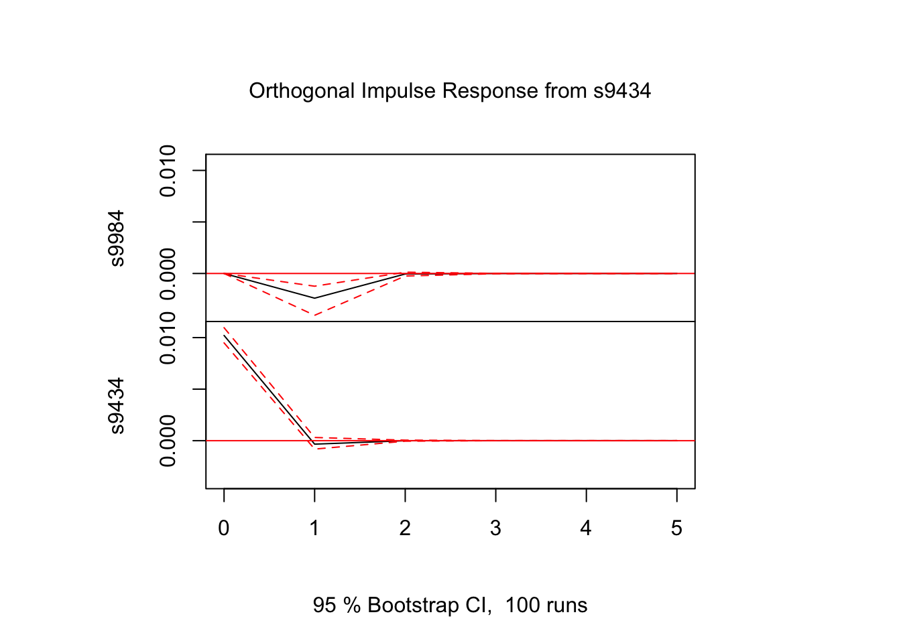
##
## Impulse response coefficients
## $s9434
## s9984 s9434
## [1,] 0.000000e+00 9.969413e-03
## [2,] -2.617238e-03 -2.238937e-04
## [3,] -5.701271e-05 1.525810e-05
## [4,] -6.527993e-06 -1.198244e-07
## [5,] -2.573517e-07 2.820668e-08
## [6,] -1.879066e-08 3.724312e-10
##
##
## Lower Band, CI= 0.95
## $s9434
## s9984 s9434
## [1,] 0.000000e+00 9.162166e-03
## [2,] -3.789247e-03 -6.709767e-04
## [3,] -3.358542e-04 -3.440056e-05
## [4,] -4.068687e-05 -5.188678e-06
## [5,] -3.710919e-06 -1.721196e-07
## [6,] -5.443953e-07 -4.483663e-08
##
##
## Upper Band, CI= 0.95
## $s9434
## s9984 s9434
## [1,] 0.000000e+00 1.071131e-02
## [2,] -1.194192e-03 4.185756e-04
## [3,] 1.168481e-04 9.556895e-05
## [4,] 8.285700e-06 6.538167e-06
## [5,] 9.813426e-07 1.017655e-06
## [6,] 1.278573e-08 9.413478e-08ip_2 <- vars::irf(var1, impulse = c("s9984"), response = c("s9984", "s9434"),
n.ahead = 5, boot = TRUE)
plot(ip_2)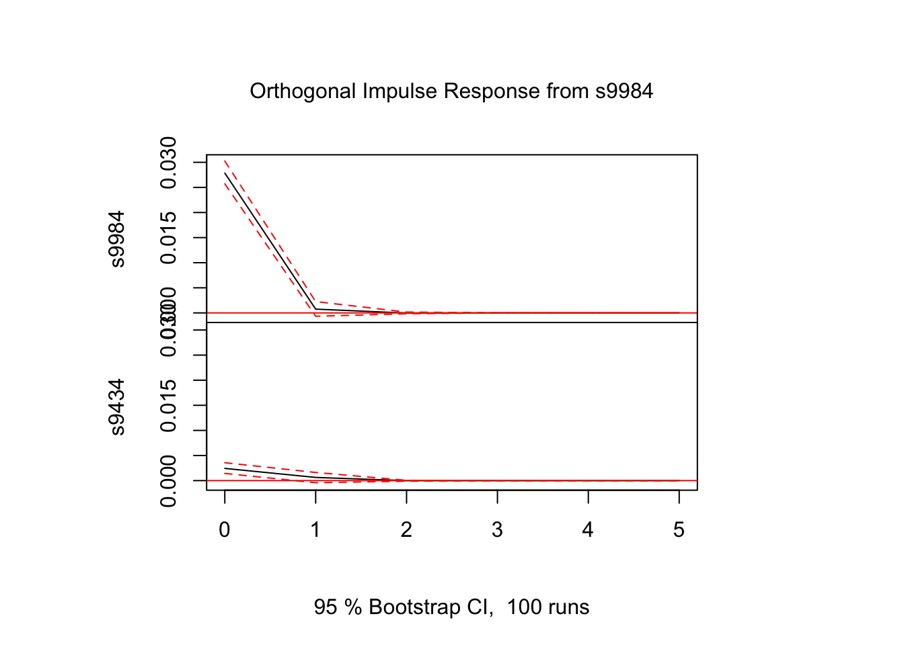
##
## Impulse response coefficients
## $s9984
## s9984 s9434
## [1,] 2.718029e-02 2.013318e-03
## [2,] 6.739494e-04 -1.514535e-04
## [3,] 6.957721e-05 7.671187e-07
## [4,] 2.876818e-06 -2.891812e-07
## [5,] 2.031928e-07 -4.750034e-09
## [6,] 1.023659e-08 -6.875338e-10
##
##
## Lower Band, CI= 0.95
## $s9984
## s9984 s9434
## [1,] 2.491913e-02 1.184473e-03
## [2,] -6.153993e-04 -7.566657e-04
## [3,] -1.234440e-04 -2.331559e-05
## [4,] -6.354991e-06 -6.358001e-06
## [5,] -2.877937e-08 -2.889297e-07
## [6,] -6.172491e-08 -5.436576e-08
##
##
## Upper Band, CI= 0.95
## $s9984
## s9984 s9434
## [1,] 2.930732e-02 2.815570e-03
## [2,] 1.842879e-03 5.305100e-04
## [3,] 2.302657e-04 2.871722e-05
## [4,] 1.859794e-05 3.959511e-07
## [5,] 2.568070e-06 3.195025e-07
## [6,] 2.146023e-07 8.176324e-09- 非直交化インパルス応答
ip_3 <- vars::irf(var1, impulse = c("s9434"), response = c("s9434", "s9984"),
ortho = F, n.ahead = 5, boot = TRUE)
plot(ip_3)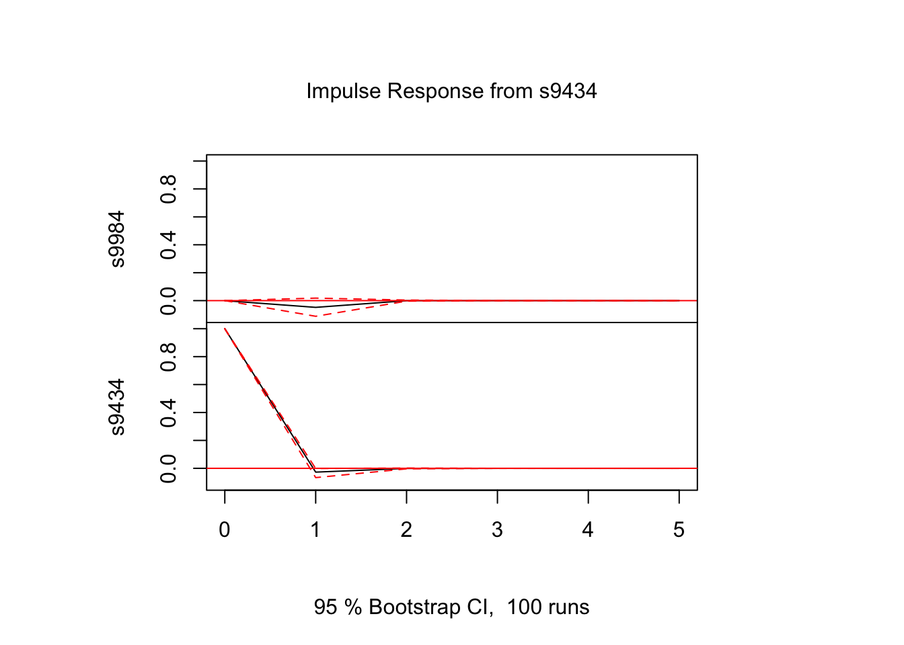
##
## Impulse response coefficients
## $s9434
## s9984 s9434
## [1,] 0.000000e+00 1.000000e+00
## [2,] -2.625268e-01 -2.245806e-02
## [3,] -5.718763e-03 1.530491e-03
## [4,] -6.548021e-04 -1.201920e-05
## [5,] -2.581413e-05 2.829322e-06
## [6,] -1.884831e-06 3.735739e-08
##
##
## Lower Band, CI= 0.95
## $s9434
## s9984 s9434
## [1,] 0.000000e+00 1.000000e+00
## [2,] -3.733072e-01 -7.188920e-02
## [3,] -2.523148e-02 -3.375044e-03
## [4,] -2.450888e-03 -4.214012e-04
## [5,] -2.164152e-04 -8.409141e-06
## [6,] -2.515614e-05 -3.965529e-06
##
##
## Upper Band, CI= 0.95
## $s9434
## s9984 s9434
## [1,] 0.000000e+00 1.000000e+00
## [2,] -9.616284e-02 2.987894e-02
## [3,] 1.140817e-02 7.974779e-03
## [4,] 7.638063e-04 3.735245e-04
## [5,] 1.115825e-04 6.818528e-05
## [6,] 4.686436e-07 4.215081e-06- 累積インパルス応答
ip_cum <- vars::irf(var1, impulse = c("s9434"), response = c("s9434", "s9984"),
n.ahead = 5, boot = TRUE, cumulative = T)
plot(ip_cum)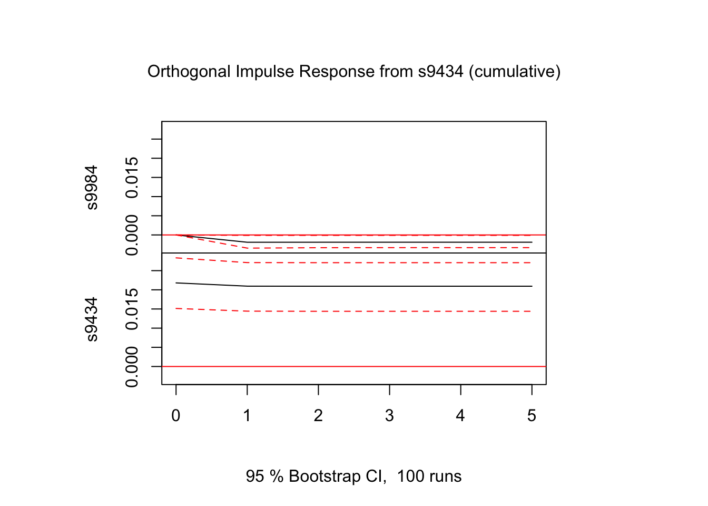
Grangerの因果性検定
## $Granger
##
## Granger causality H0: s9434 do not Granger-cause s9984
##
## data: VAR object var1
## F-Test = 11.441, df1 = 1, df2 = 2464, p-value = 0.0007298
##
##
## $Instant
##
## H0: No instantaneous causality between: s9434 and s9984
##
## data: VAR object var1
## Chi-squared = 46.569, df = 1, p-value = 8.844e-12- –> 帰無仮説(因果性なし)棄却 → 9434をcauseとするGranger因果性の存在を示唆
## $Granger
##
## Granger causality H0: s9984 do not Granger-cause s9434
##
## data: VAR object var1
## F-Test = 0.13082, df1 = 1, df2 = 2464, p-value = 0.7176
##
##
## $Instant
##
## H0: No instantaneous causality between: s9984 and s9434
##
## data: VAR object var1
## Chi-squared = 46.569, df = 1, p-value = 8.844e-12- –> 帰無仮説(因果性なし)棄却できず → 9984をcauseとするGranger因果性存在せず
- 一方、Grangerの瞬時因果性, 9984, 9434, いずれの方向も棄却できず → 存在を示唆
事例2: 米英日3株式市場 (S&P500, FTSE, 日経平均)
- データをYahoo!ファイナンスより入手
library(vars)
gspc <- getSymbols('^GSPC', periodicity = "monthly", from = '1999-12-31', auto.assign = FALSE)
ftse <- getSymbols('^FTSE', periodicity = "monthly", from = '1999-12-31', auto.assign = FALSE)
n225 <- getSymbols('^N225', periodicity = "monthly", from = '1999-12-31', auto.assign = FALSE)
us <- diff(log(gspc$GSPC.Adjusted))[-1]
uk <- diff(log(ftse$FTSE.Adjusted))[-1]
jp <- diff(log(n225$N225.Adjusted))[-1]
mkt <- cbind(us, uk, jp)
idx <- complete.cases(mkt) # 欠損値(NA)のあるレコードの除去
mkt <- mkt[idx]
colnames(mkt) <- c("us", "uk", "jp")
plot(cumsum(mkt), type = "l", col = c("black", "blue", "red"),
main = "Market indices: S&P500 (black), FTSE (blue), NK225 (red)")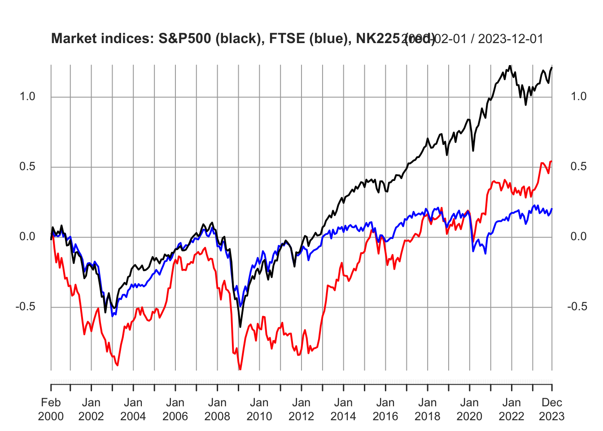
VARモデルの推定
- 以下, 引き続きパッケージvarsを利用
- 3変量VAR(2)モデルを仮定した場合の推定
## us uk jp
## 2000-02-01 -0.02031300 -0.005743495 0.02125795
## 2000-03-01 0.09232375 0.048174179 0.01875144
## 2000-04-01 -0.03127991 -0.033078382 -0.12354810
## 2000-05-01 -0.02215875 0.005044624 -0.09575560
## 2000-06-01 0.02365163 -0.007370510 0.06395117var2usukjp <- vars::VAR(usukjp, p = 2, type = "const")
#summary(var2usukjp)
# 係数推定値 (値のみ）
coef(var2usukjp)## $us
## Estimate Std. Error t value Pr(>|t|)
## us.l1 -0.094052447 0.10699664 -0.8790224 0.38014555
## uk.l1 0.047807342 0.11396027 0.4195088 0.67516713
## jp.l1 0.107133138 0.06519323 1.6433171 0.10144378
## us.l2 -0.133224905 0.10723103 -1.2424100 0.21512856
## uk.l2 0.022080173 0.11395953 0.1937545 0.84650909
## jp.l2 0.047652319 0.06506606 0.7323683 0.46455862
## const 0.004656757 0.00270469 1.7217344 0.08622603
##
## $uk
## Estimate Std. Error t value Pr(>|t|)
## us.l1 0.0875184421 0.093401743 0.9370108 0.34956338
## uk.l1 -0.1472951339 0.099480581 -1.4806421 0.13983035
## jp.l1 0.0746857943 0.056909831 1.3123531 0.19047962
## us.l2 -0.1658857052 0.093606348 -1.7721630 0.07745883
## uk.l2 0.1058304950 0.099479933 1.0638376 0.28832214
## jp.l2 -0.0092536541 0.056798825 -0.1629198 0.87069951
## const 0.0006888313 0.002361034 0.2917498 0.77069471
##
## $jp
## Estimate Std. Error t value Pr(>|t|)
## us.l1 -0.034307652 0.131547826 -0.2607998 0.7944393
## uk.l1 0.127810879 0.140109315 0.9122226 0.3624391
## jp.l1 0.068272334 0.080152300 0.8517826 0.3950653
## us.l2 -0.188429556 0.131835994 -1.4292725 0.1540446
## uk.l2 0.073697157 0.140108402 0.5260010 0.5993054
## jp.l2 0.082373182 0.079995959 1.0297168 0.3040348
## const 0.002457766 0.003325301 0.7391109 0.4604610## [[1]]
## us.l1 uk.l1 jp.l1
## us -0.09405245 0.04780734 0.10713314
## uk 0.08751844 -0.14729513 0.07468579
## jp -0.03430765 0.12781088 0.06827233
##
## [[2]]
## us.l2 uk.l2 jp.l2
## us -0.1332249 0.02208017 0.047652319
## uk -0.1658857 0.10583050 -0.009253654
## jp -0.1884296 0.07369716 0.082373182## us.l1 uk.l1 jp.l1 us.l2 uk.l2 jp.l2
## us -0.09405245 0.04780734 0.10713314 -0.1332249 0.02208017 0.047652319
## uk 0.08751844 -0.14729513 0.07468579 -0.1658857 0.10583050 -0.009253654
## jp -0.03430765 0.12781088 0.06827233 -0.1884296 0.07369716 0.082373182
## const
## us 0.0046567569
## uk 0.0006888313
## jp 0.0024577660- 次数\(p\)を選択する場合
- VAR()関数によって, 情報量規準により最適な次数を選択
- 最大次数lag.max と採用する情報量規準icを指定
##
## VAR Estimation Results:
## =========================
## Endogenous variables: us, uk, jp
## Deterministic variables: const
## Sample size: 287
## Log Likelihood: 1666.389
## Roots of the characteristic polynomial:
## 0.1995 0.1098 0.1074
## Call:
## vars::VAR(y = usukjp, type = "const", lag.max = 5, ic = "AIC")
##
##
## Estimation results for equation us:
## ===================================
## us = us.l1 + uk.l1 + jp.l1 + const
##
## Estimate Std. Error t value Pr(>|t|)
## us.l1 -0.087707 0.105712 -0.830 0.407
## uk.l1 0.038856 0.111793 0.348 0.728
## jp.l1 0.105901 0.064893 1.632 0.104
## const 0.004482 0.002676 1.675 0.095 .
## ---
## Signif. codes: 0 '***' 0.001 '**' 0.01 '*' 0.05 '.' 0.1 ' ' 1
##
##
## Residual standard error: 0.04492 on 283 degrees of freedom
## Multiple R-Squared: 0.01102, Adjusted R-squared: 0.0005351
## F-statistic: 1.051 on 3 and 283 DF, p-value: 0.3704
##
##
## Estimation results for equation uk:
## ===================================
## uk = us.l1 + uk.l1 + jp.l1 + const
##
## Estimate Std. Error t value Pr(>|t|)
## us.l1 0.1045307 0.0923428 1.132 0.2586
## uk.l1 -0.1737916 0.0976544 -1.780 0.0762 .
## jp.l1 0.0720371 0.0566860 1.271 0.2048
## const 0.0001641 0.0023375 0.070 0.9441
## ---
## Signif. codes: 0 '***' 0.001 '**' 0.01 '*' 0.05 '.' 0.1 ' ' 1
##
##
## Residual standard error: 0.03924 on 283 degrees of freedom
## Multiple R-Squared: 0.01713, Adjusted R-squared: 0.006706
## F-statistic: 1.644 on 3 and 283 DF, p-value: 0.1795
##
##
## Estimation results for equation jp:
## ===================================
## jp = us.l1 + uk.l1 + jp.l1 + const
##
## Estimate Std. Error t value Pr(>|t|)
## us.l1 -0.007994 0.129182 -0.062 0.951
## uk.l1 0.103646 0.136612 0.759 0.449
## jp.l1 0.064319 0.079300 0.811 0.418
## const 0.001842 0.003270 0.563 0.574
##
##
## Residual standard error: 0.05489 on 283 degrees of freedom
## Multiple R-Squared: 0.01387, Adjusted R-squared: 0.003419
## F-statistic: 1.327 on 3 and 283 DF, p-value: 0.2658
##
##
##
## Covariance matrix of residuals:
## us uk jp
## us 0.002018 0.001407 0.001622
## uk 0.001407 0.001540 0.001255
## jp 0.001622 0.001255 0.003013
##
## Correlation matrix of residuals:
## us uk jp
## us 1.0000 0.7983 0.6578
## uk 0.7983 1.0000 0.5827
## jp 0.6578 0.5827 1.0000–> \(p=1\)を選択
推定されたVARモデルによる予測
## $us
## fcst lower upper CI
## [1,] 0.004729262 -0.08300495 0.09246347 0.08773421
## [2,] 0.006951201 -0.08129811 0.09520051 0.08824931
## [3,] 0.003833024 -0.08471751 0.09238356 0.08855054
## [4,] 0.003849574 -0.08470227 0.09240142 0.08855185
## [5,] 0.004042756 -0.08450991 0.09259542 0.08855267
## [6,] 0.004069253 -0.08448342 0.09262192 0.08855267
## [7,] 0.004064952 -0.08448772 0.09261763 0.08855268
## [8,] 0.004064999 -0.08448768 0.09261767 0.08855268
## [9,] 0.004066532 -0.08448614 0.09261921 0.08855268
## [10,] 0.004066323 -0.08448635 0.09261900 0.08855268
##
## $uk
## fcst lower upper CI
## [1,] 0.0067790272 -0.06980775 0.08336580 0.07658678
## [2,] -0.0036426967 -0.08080508 0.07351968 0.07716238
## [3,] 0.0022600401 -0.07562961 0.08014969 0.07788965
## [4,] -0.0007935761 -0.07870408 0.07711693 0.07791050
## [5,] 0.0008551043 -0.07706321 0.07877341 0.07791831
## [6,] 0.0003210138 -0.07759820 0.07824023 0.07791921
## [7,] 0.0005425769 -0.07737679 0.07846194 0.07791937
## [8,] 0.0004513947 -0.07746800 0.07837079 0.07791939
## [9,] 0.0004876917 -0.07743170 0.07840709 0.07791939
## [10,] 0.0004735159 -0.07744588 0.07839291 0.07791939
##
## $jp
## fcst lower upper CI
## [1,] -0.003663050 -0.1115285 0.1042024 0.1078655
## [2,] 0.006152330 -0.1024839 0.1147885 0.1086362
## [3,] 0.001480469 -0.1075994 0.1105603 0.1090798
## [4,] 0.001644716 -0.1074385 0.1107279 0.1090832
## [5,] 0.001902812 -0.1071809 0.1109866 0.1090837
## [6,] 0.001909892 -0.1071739 0.1109937 0.1090838
## [7,] 0.001947566 -0.1071362 0.1110313 0.1090838
## [8,] 0.001934833 -0.1071490 0.1110186 0.1090838
## [9,] 0.001942551 -0.1071412 0.1110263 0.1090838
## [10,] 0.001939886 -0.1071439 0.1110237 0.1090838Granger因果性の検定
- 日本をcauseとする因果性
## us uk jp
## 2000-02-01 -0.02031300 -0.005743495 0.02125795
## 2000-03-01 0.09232375 0.048174179 0.01875144
## 2000-04-01 -0.03127991 -0.033078382 -0.12354810
## 2000-05-01 -0.02215875 0.005044624 -0.09575560
## 2000-06-01 0.02365163 -0.007370510 0.06395117
## 2000-07-01 -0.01647627 0.008297825 -0.10169496## $Granger
##
## Granger causality H0: jp do not Granger-cause us uk
##
## data: VAR object var3usukjp
## F-Test = 0.78801, df1 = 6, df2 = 825, p-value = 0.5794
##
##
## $Instant
##
## H0: No instantaneous causality between: jp and us uk
##
## data: VAR object var3usukjp
## Chi-squared = 86.933, df = 2, p-value < 2.2e-16–> Gragnerの意味での因果性なし. 同時因果性あり
日英をcauseとする因果性
## $Granger
##
## Granger causality H0: uk jp do not Granger-cause us
##
## data: VAR object var3usukjp
## F-Test = 0.62144, df1 = 6, df2 = 825, p-value = 0.7133
##
##
## $Instant
##
## H0: No instantaneous causality between: uk jp and us
##
## data: VAR object var3usukjp
## Chi-squared = 116.62, df = 2, p-value < 2.2e-16- –> Grangerの意味での因果性なし. 同時因果性あり
- vars::causality()
- causeを指定なし (デフォルト) では, 第1列の変数がcause
- K変量VARモデルに対する因果性検定 (対応する係数にゼロ制約を課す)
- ← 特定の2変量のみの因果性を調べる検定ではない予測誤差分散分解 (forecast error variance decomposition)
- 直交化インパルス応答関数を使い, 第j変数の第k変数のh先予測誤差分散への寄与
# library(vars)
var3_fevd <- vars::fevd(var3usukjp, n.ahead = 10) # 10期先まで評価する
plot(var3_fevd)
varmkt <- vars::VAR(mkt, p = 3, type = "const")
varmkt_fevd <- vars::fevd(varmkt, n.ahead = 10) # 10期先まで評価する
plot(varmkt_fevd)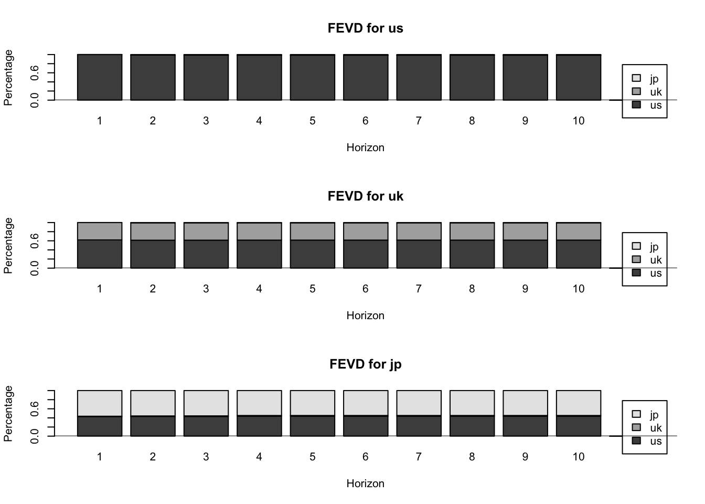
- 変数の順番の影響の確認
- 分散分解 (変数の順序入れ替え)
## us uk jp
## us 0.002013806 0.001397059 0.001618812
## uk 0.001397059 0.001544705 0.001243908
## jp 0.001618812 0.001243908 0.003014064## us jp uk
## us 0.002013806 0.001618812 0.001397059
## jp 0.001618812 0.003014064 0.001243908
## uk 0.001397059 0.001243908 0.001544705var3usjpuk <- vars::VAR(usjpuk, p = 3, type = "const")
var3_fevd_2 <- vars::fevd(var3usjpuk, n.ahead = 10) # 10期先まで評価する
plot(var3_fevd_2)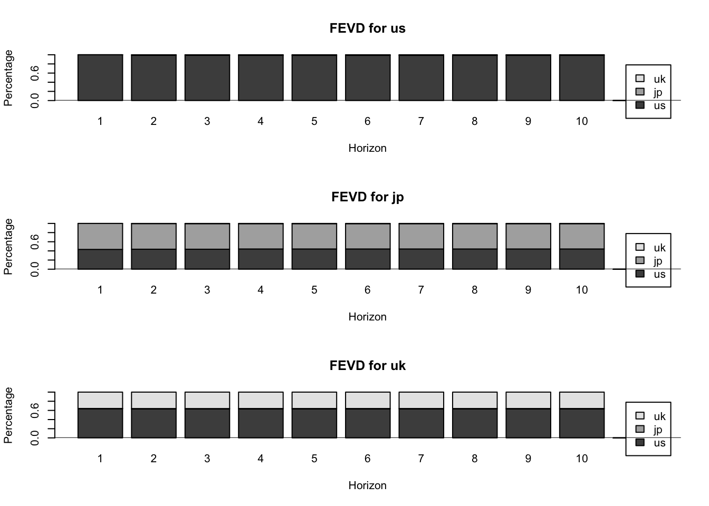
- 直交インパルス応答
- 米国 → 他市場
- (米国, 英国, 日本)の順序 vs (米国, 日本, 英国)の順序
# (us, uk, jp)
ip1 <- vars::irf(var3usukjp, impulse = c("us"), n.ahead = 5, boot = TRUE)
# ortho = T (デフォルト): 直交化インパルス応答; ortho = F: 非直交化インパルス応答
# boot = T: ブートストラップ法により, 信頼区間計算
# cumulative = T: 累積インパルス応答. デフォルトはF.
plot(ip1)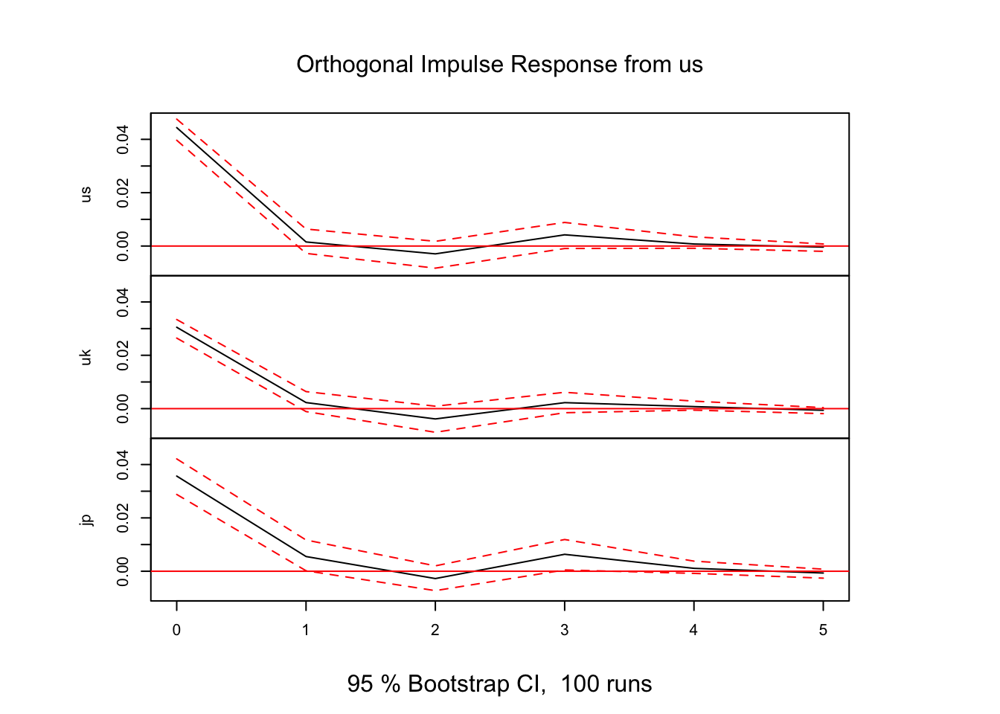
#
# (us, jp, uk)
ip2 <- vars::irf(var3usjpuk, impulse = c("us"), n.ahead = 5, boot = TRUE)
plot(ip2)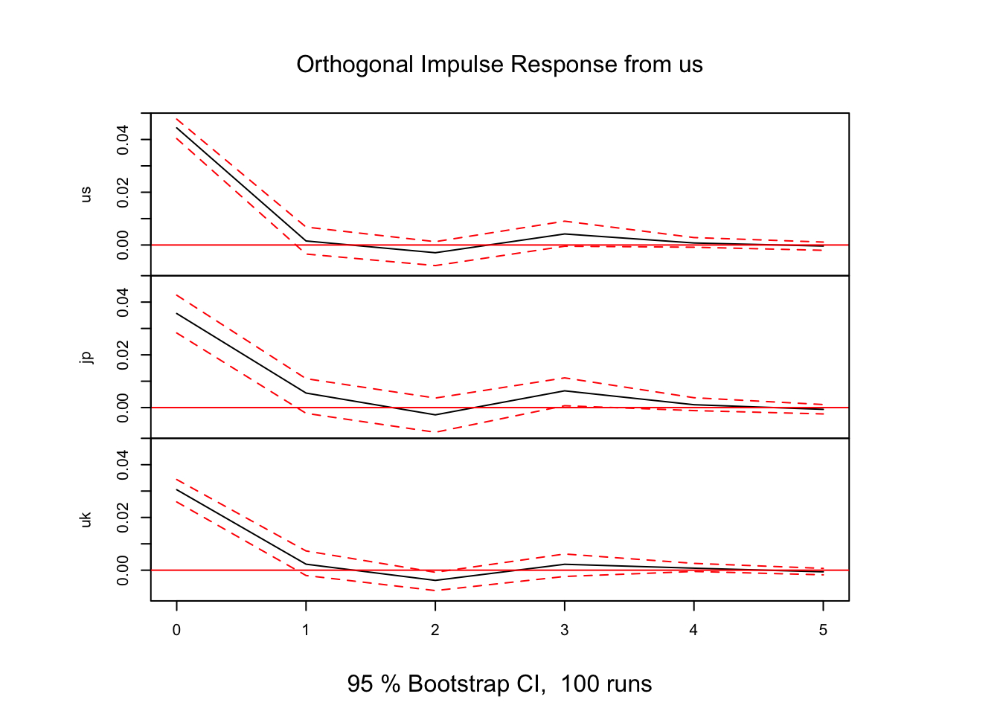
- 日本 → 他市場
# (us, uk, jp)
#ip3 <- vars::irf(var3usukjp, impulse = c("uk"), n.ahead = 5, boot = TRUE)
ip3 <- vars::irf(var3usukjp, impulse = c("jp"), n.ahead = 5, boot = TRUE)
plot(ip3)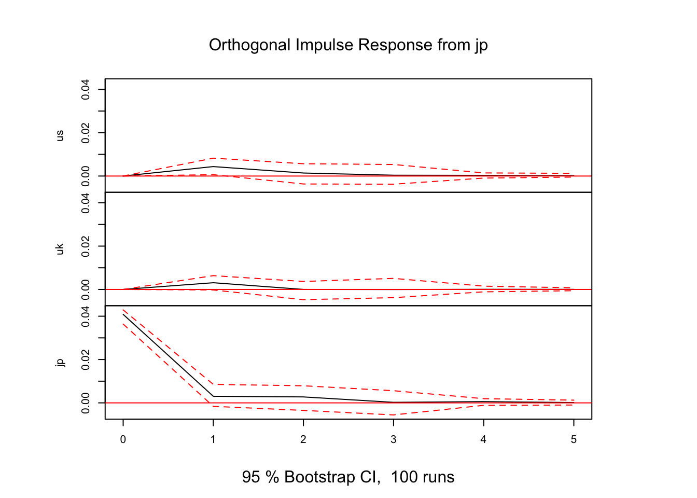
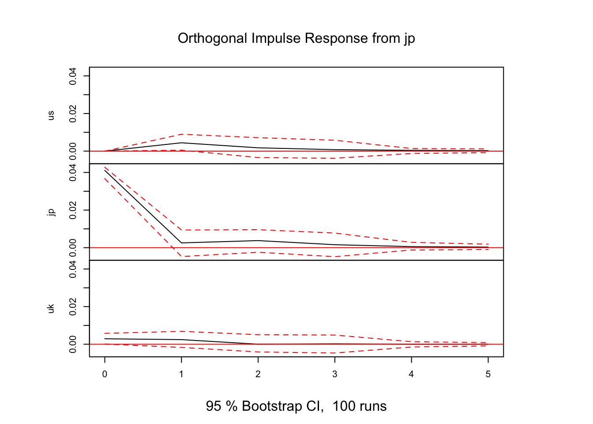
- 確認: Choleski分解: \(\Sigma = P P'\)
## us uk jp
## us 0.04487545 0.000000000 0.00000000
## uk 0.03113192 0.023989775 0.00000000
## jp 0.03607344 0.005038534 0.04107779## us jp uk
## us 0.04487545 0.000000000 0.00000000
## jp 0.03607344 0.041385646 0.00000000
## uk 0.03113192 0.002920658 0.02381132- (参考) Tsay氏作成パッケージMTS
その他: Granger因果性検定の関数
- パッケージlmtest
- grangertest(): 2変量間のGranger因果性検定
- usage: grangertest(x, y, order = 1, na.action = na.omit, ...)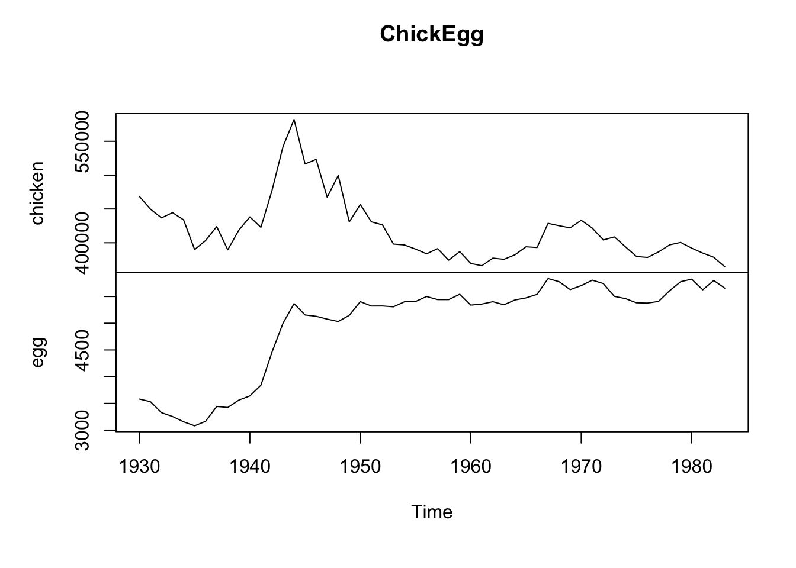
## Granger causality test
##
## Model 1: egg ~ Lags(egg, 1:3) + Lags(chicken, 1:3)
## Model 2: egg ~ Lags(egg, 1:3)
## Res.Df Df F Pr(>F)
## 1 44
## 2 47 -3 0.5916 0.6238## Granger causality test
##
## Model 1: chicken ~ Lags(chicken, 1:3) + Lags(egg, 1:3)
## Model 2: chicken ~ Lags(chicken, 1:3)
## Res.Df Df F Pr(>F)
## 1 44
## 2 47 -3 5.405 0.002966 **
## ---
## Signif. codes: 0 '***' 0.001 '**' 0.01 '*' 0.05 '.' 0.1 ' ' 1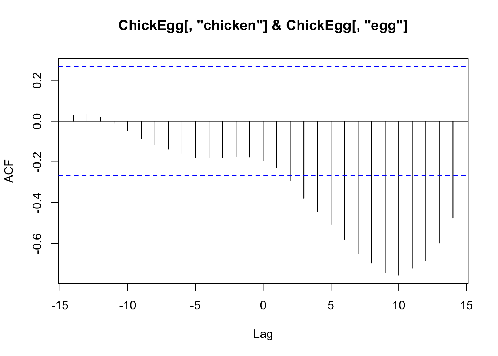
- パッケージNlinTS: 非線形時系列解析, 因果性検出
- causality.test(): 2変量間のGranger因果性検定
- usage: causality.test(ts1, ts2, lag, diff = FALSE)## Loading required package: Rcppres1 <- NlinTS::causality.test(ChickEgg[, "egg"], ChickEgg[, "chicken"], lag = 3)
res2 <- NlinTS::causality.test(ChickEgg[, "chicken"], ChickEgg[, "egg"], lag = 3)
res1$summary()## --------------------
## Test summary
## --------------------
## The lag parameter: p = 3
## The Granger causality Index: GCI = 0.0395451
## The value of the F-test: 0.591615
## The p_value of the F-test: 0.623786
## The critical value with 5% of risk:: 2.822## --------------------
## Test summary
## --------------------
## The lag parameter: p = 3
## The Granger causality Index: GCI = 0.313731
## The value of the F-test: 5.40498
## The p_value of the F-test: 0.0029664
## The critical value with 5% of risk:: 2.822–> 上のgrangertst()の結果と同一
パッケージMTS
- GrangerTest(): p変量のGranger因果性検定
- usage: GrangerTest(X,p=1,include.mean=T,locInput=c(1))##
## Attaching package: 'MTS'## The following object is masked from 'package:vars':
##
## VAR## The following object is masked from 'package:TTR':
##
## VMAEggChick <- data.frame(egg = ChickEgg[, "egg"], chicken = ChickEgg[, "chicken"])
MTS::GrangerTest(EggChick, p = 3) # カイ2乗検定 (F値x3 〜 (漸近的に)Chisq(3))## Number of targeted zero parameters: 3
## Chi-square test for Granger Causality and p-value: 1.774846 0.620424
## Constant term:
## Estimates: 306.1473 133544.6
## Std.Error: 132.5194 41073.51
## AR coefficient matrix
## AR( 1 )-matrix
## [,1] [,2]
## [1,] 1.3 0.000
## [2,] 76.6 0.292
## standard error
## [,1] [,2]
## [1,] 0.143 0.000
## [2,] 25.279 0.184
## AR( 2 )-matrix
## [,1] [,2]
## [1,] -0.361 0.000
## [2,] -47.078 0.445
## standard error
## [,1] [,2]
## [1,] 0.234 0.000
## [2,] 39.387 0.186
## AR( 3 )-matrix
## [,1] [,2]
## [1,] 0.0042 0.00000
## [2,] -35.9327 0.00407
## standard error
## [,1] [,2]
## [1,] 0.141 0.000
## [2,] 28.538 0.174
##
## Residuals cov-mtx:
## [,1] [,2]
## [1,] 22800.12 1843210
## [2,] 1843210.37 412998788
##
## det(SSE) = 6.018998e+12
## AIC = 29.75928
## BIC = 30.09077
## HQ = 29.88712- –> 上のgrangertst()の結果とやや異なる
9.4 補足: 分散共分散行列のコレスキー分解
直交化インパルス応答や予測誤差分散分解では, 事前に外生性の高い順に変数を配置しておく必要がある. 直交化する際には, VAR(p)モデルの撹乱項の分散共分散行列に対してCholeskey分解が利用される.
- 分散共分散行列に対するコレスキー (Choleskey) 分解の計算例
- 以下, 簡単のため, VAR(p)モデルは使わない
## Loading required package: MASS## Loading required package: strucchange## Loading required package: zoo##
## Attaching package: 'zoo'## The following objects are masked from 'package:base':
##
## as.Date, as.Date.numeric## Loading required package: sandwich## Loading required package: urca## Loading required package: lmtest## Loading required package: xts## Loading required package: TTR## Registered S3 method overwritten by 'quantmod':
## method from
## as.zoo.data.frame zoo## ── Attaching core tidyverse packages ──────────────────────── tidyverse 2.0.0 ──
## ✔ dplyr 1.1.2 ✔ readr 2.1.4
## ✔ forcats 1.0.0 ✔ stringr 1.5.0
## ✔ ggplot2 3.4.2 ✔ tibble 3.2.1
## ✔ lubridate 1.9.2 ✔ tidyr 1.3.0
## ✔ purrr 1.0.2## ── Conflicts ────────────────────────────────────────── tidyverse_conflicts() ──
## ✖ stringr::boundary() masks strucchange::boundary()
## ✖ dplyr::filter() masks stats::filter()
## ✖ dplyr::first() masks xts::first()
## ✖ dplyr::lag() masks stats::lag()
## ✖ dplyr::last() masks xts::last()
## ✖ dplyr::select() masks MASS::select()
## ℹ Use the conflicted package (<http://conflicted.r-lib.org/>) to force all conflicts to become errorsgspc <- getSymbols('^GSPC', periodicity = "monthly", from = '1999-12-31', auto.assign = FALSE)
ftse <- getSymbols('^FTSE', periodicity = "monthly", from = '1999-12-31', auto.assign = FALSE)
n225 <- getSymbols('^N225', periodicity = "monthly", from = '1999-12-31', auto.assign = FALSE)
us <- diff(log(gspc$GSPC.Adjusted))[-1]
uk <- diff(log(ftse$FTSE.Adjusted))[-1]
jp <- diff(log(n225$N225.Adjusted))[-1]
mkt <- merge.xts(us, uk, jp, all = T)
idx <- complete.cases(mkt) # 欠損値(NA)のあるレコードの除去
mkt <- mkt[idx]
colnames(mkt) <- c("us", "uk", "jp")
plot(cumsum(mkt), type = "l", col = c("black", "blue", "red"),
main = "Market indices: S&P500 (black), FTSE (blue), NK225 (red)")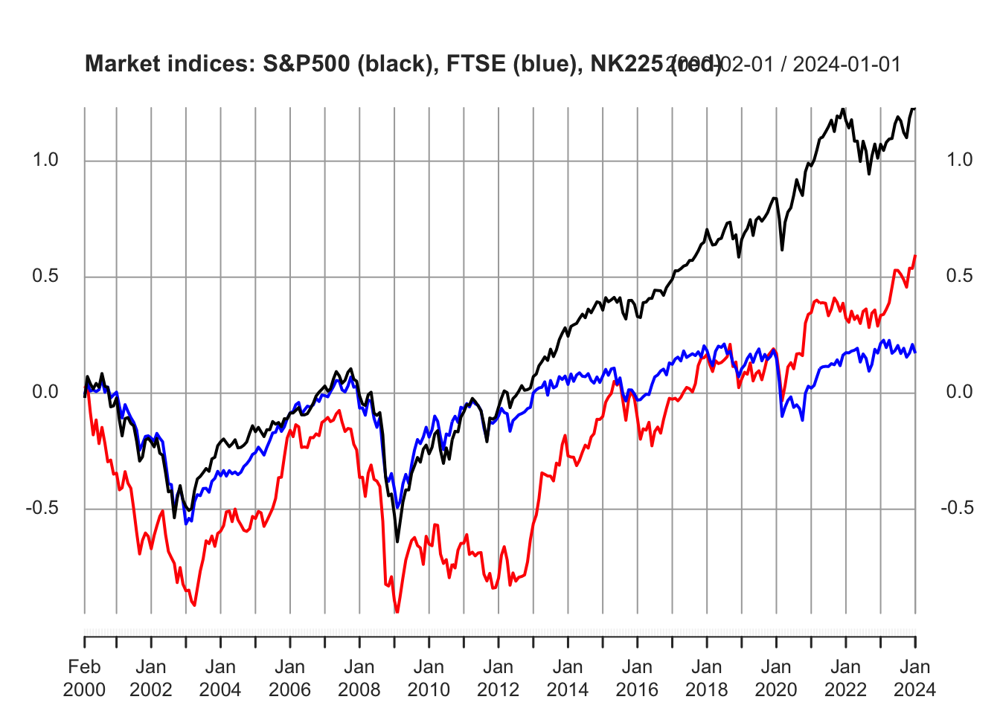
分散共分散行列\({\bf \Sigma}\)のCholeskey分解 \[ {\bf \Sigma} = {\bf P}{\bf P'} \] 但し, \({\bf P}\)は下三角行列.
米英日の日次収益率に対して分散共分散行列を計算 → Choleskey分解
## us uk jp
## 2000-02-01 -0.02031300 -0.005743495 0.02125795
## 2000-03-01 0.09232375 0.048174179 0.01875144
## 2000-04-01 -0.03127991 -0.033078382 -0.12354810
## 2000-05-01 -0.02215875 0.005044624 -0.09575560
## 2000-06-01 0.02365163 -0.007370510 0.06395117## us uk jp
## us 0.002014 0.001397 0.001619
## uk 0.001397 0.001545 0.001244
## jp 0.001619 0.001244 0.003014## us uk jp
## us 0.04488 0.000000 0.00000
## uk 0.03113 0.023990 0.00000
## jp 0.03607 0.005039 0.04108## us uk jp
## us 0.002014 0.001397 0.001619
## uk 0.001397 0.001545 0.001244
## jp 0.001619 0.001244 0.003014- 米日英の分散共分散行列を計算 → Choleskey分解
## us jp uk
## 2000-02-01 -0.02031300 0.02125795 -0.005743495
## 2000-03-01 0.09232375 0.01875144 0.048174179
## 2000-04-01 -0.03127991 -0.12354810 -0.033078382
## 2000-05-01 -0.02215875 -0.09575560 0.005044624
## 2000-06-01 0.02365163 0.06395117 -0.007370510## us jp uk
## us 0.002014 0.001619 0.001397
## jp 0.001619 0.003014 0.001244
## uk 0.001397 0.001244 0.001545## us jp uk
## us 0.04488 0.000000 0.00000
## jp 0.03607 0.041386 0.00000
## uk 0.03113 0.002921 0.02381## us jp uk
## us 0.002014 0.001619 0.001397
## jp 0.001619 0.003014 0.001244
## uk 0.001397 0.001244 0.001545